THE FAN · RICHMOND, VIRGINIA
Fan
Fare.
Made for life in the Fan.
THE RESIDENCES
City living.
Neighborhood character.
Fan Fare is a trio of townhome-style residences shaped for walkable Richmond living, with open living plans designed for gathering and a strong connection to the surrounding neighborhood.
THE PROJECT
Inside
Fan Fare.
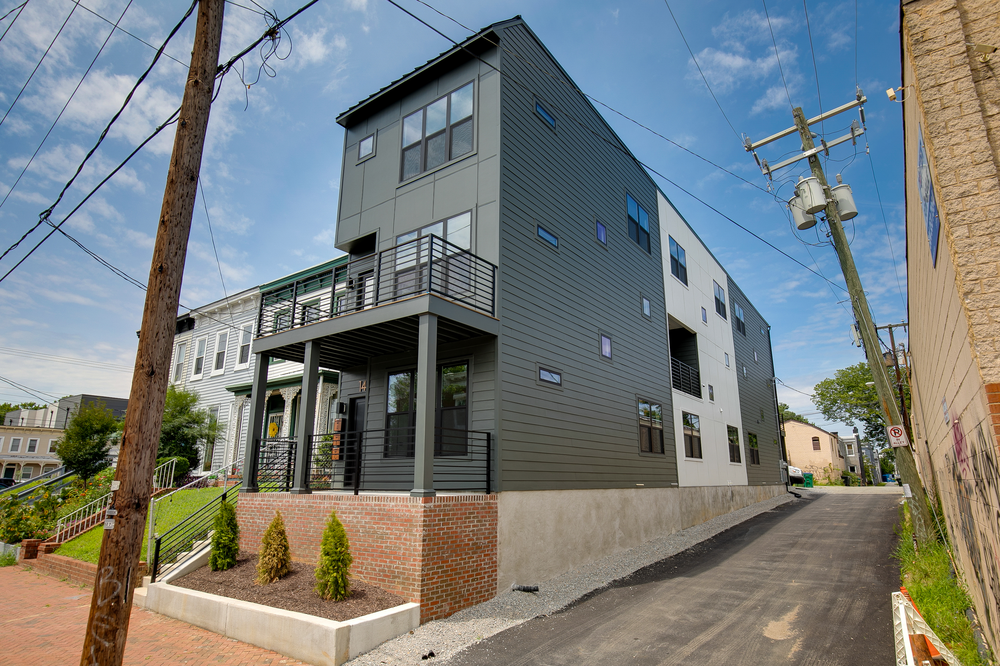
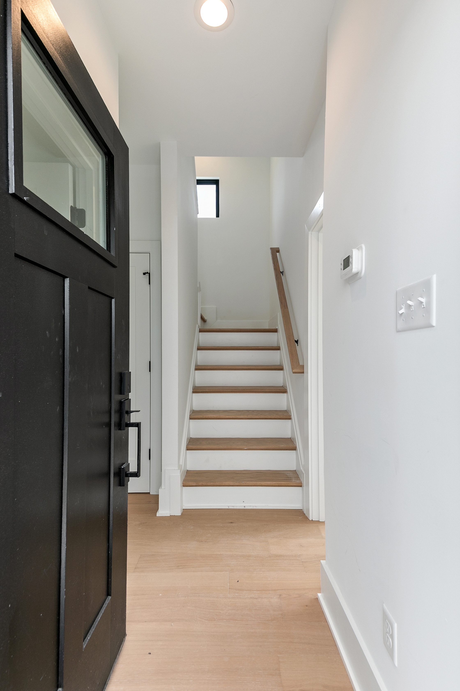
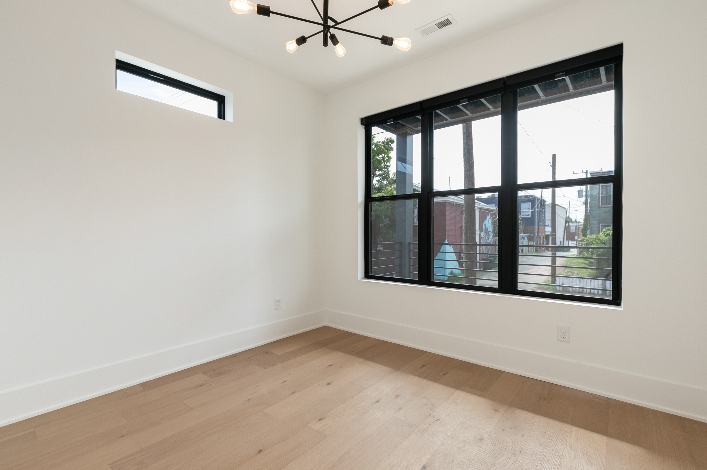
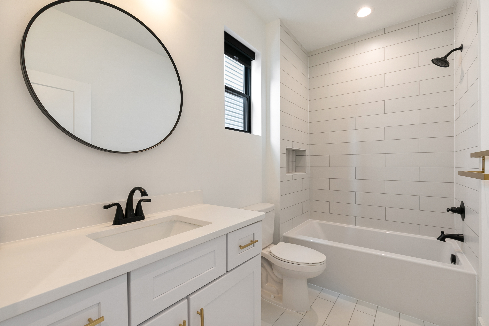
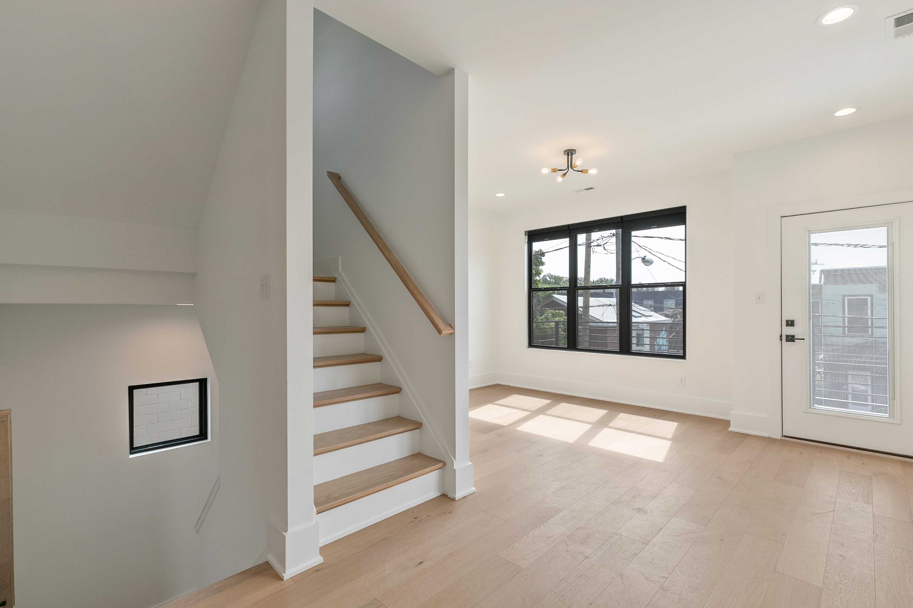
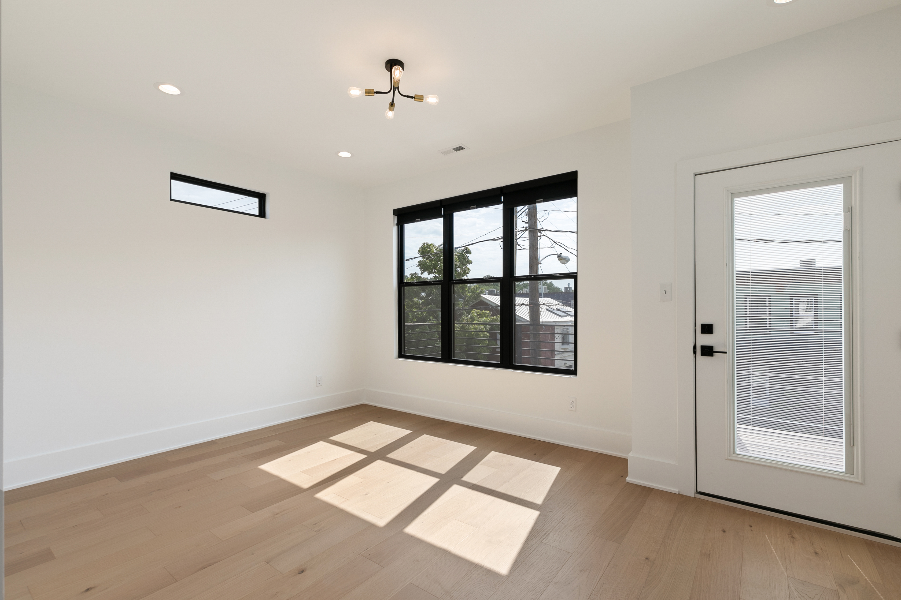
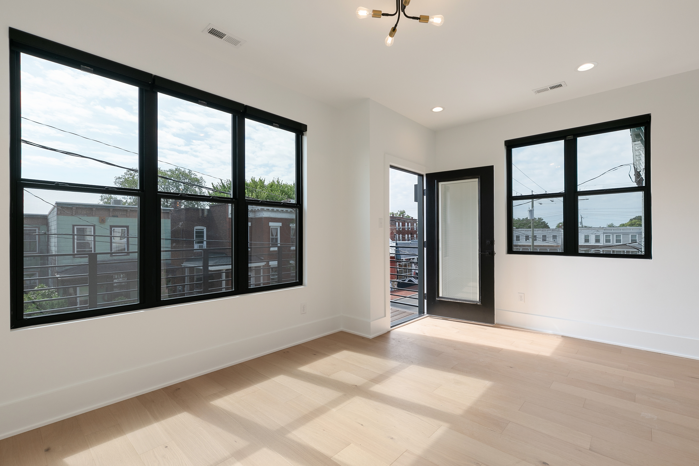
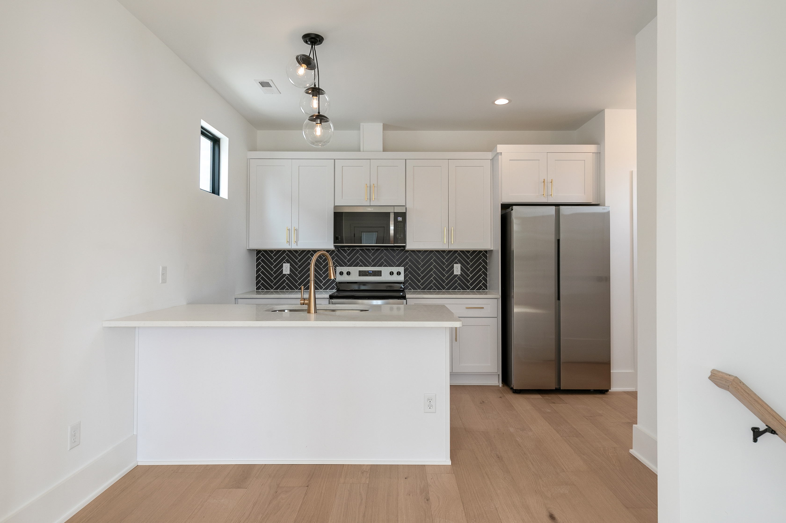
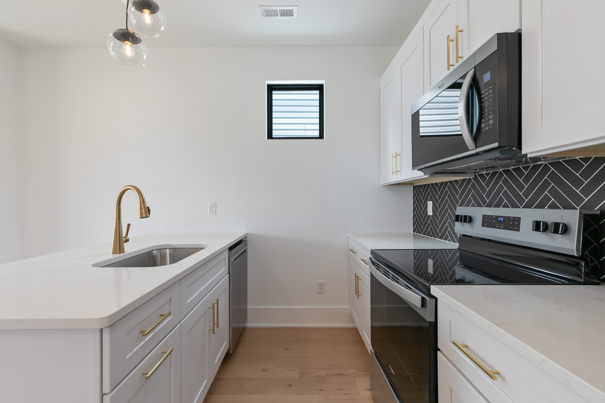
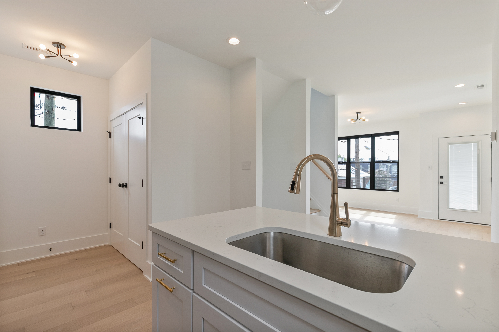
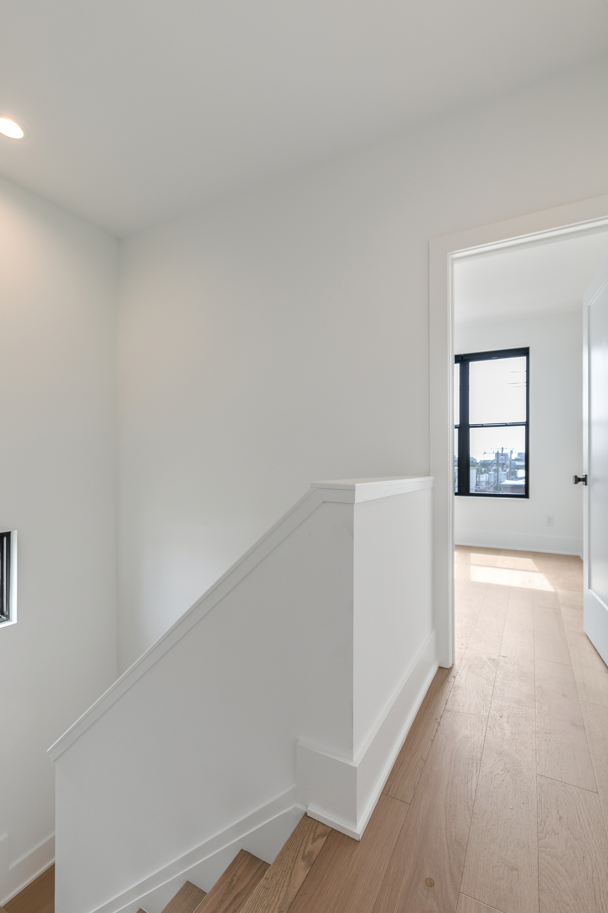
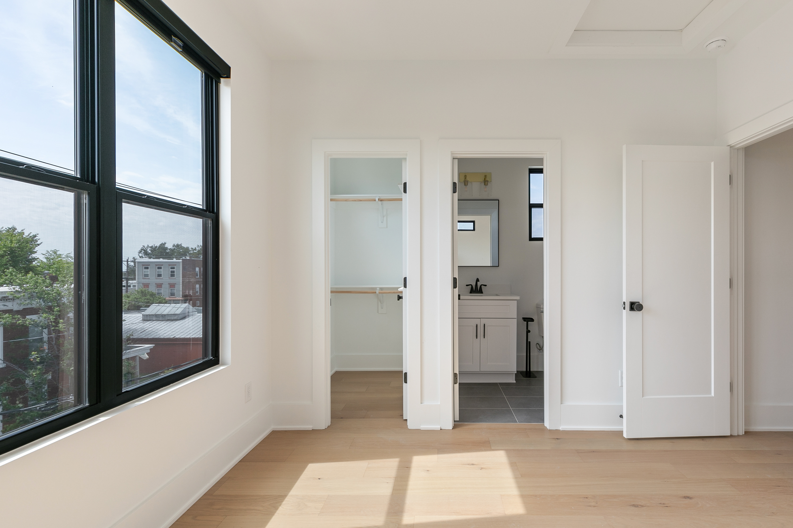
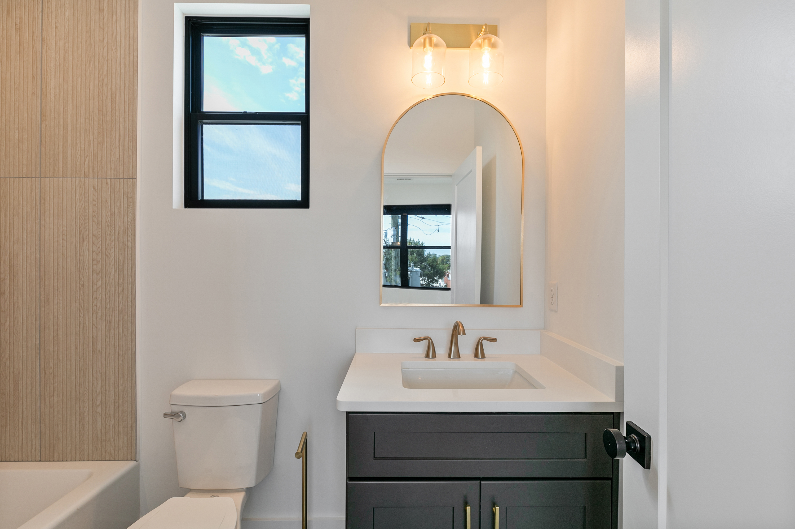
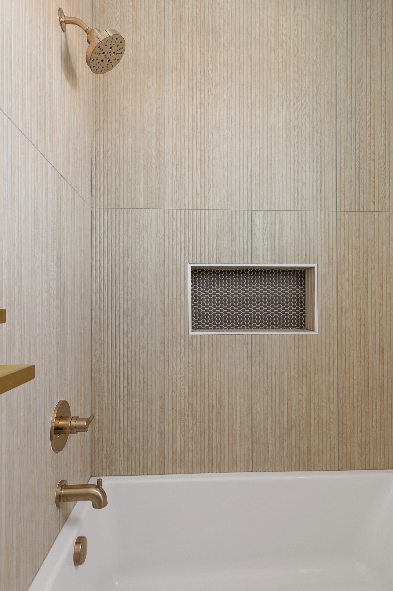
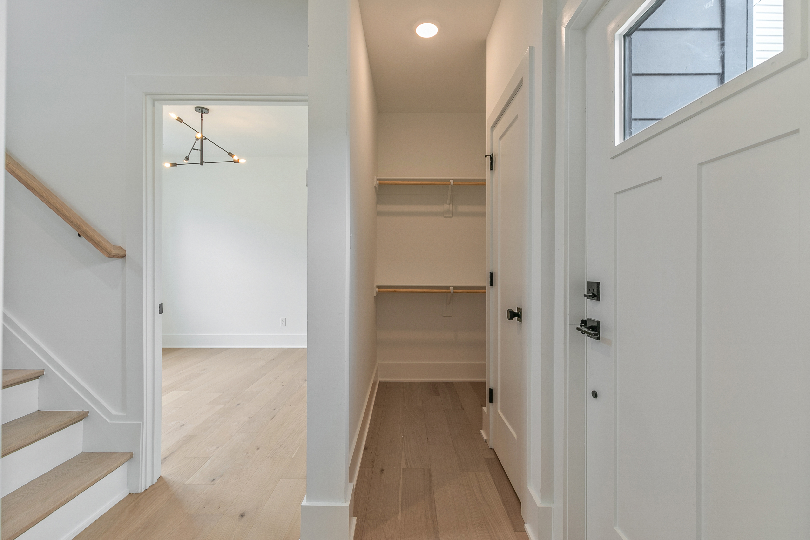
THE FAN · RICHMOND, VIRGINIA
At home
in the neighborhood.
Designed for the rhythm of one of Richmond's most walkable neighborhoods, Fan Fare pairs contemporary living with the character and energy of the Fan.
START A CONVERSATION →